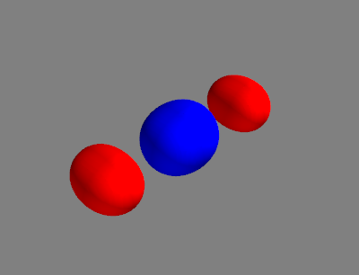

Problem Set 3
Problem 1
You will need an implementation of the Extended Hückel Theory from
problem set 2. If you did not manage to solve that problem, or if you are
unsure about your solution, you can download an object-oriented implementation
from
here.
Its constructor takes an instance of the Molecule class and you can
use the method get_total_energy() to obtain the total energy.
In problem set 2, you have calculated the total molecular energy using the extended Hückel method. Now we can use optimisation algorithms to minimise the molecular energy with respect to the nuclear coordinates to obtain (in the best case) a relaxed geometry.
For this purpose, we shall at first optimise a model function:
As an example, we shall use the following parameters
We shall first define a Python function to obtain the objective function. For , it could look like this:
def double_well(q, q0, delta, e_ts):
pot = (delta / (2.0 * q0)) * (q - q0) \
+ ((e_ts - 0.5 * delta) / q0**4) \
* (q - q0)**2 * (q + q0)**2
return pot
Note that we have set the independent variable q as the first argument
of this function. This is necessary because we want to use
the SciPy function
optimize.minimize,
which requires the objective function to have the independent variable as
its first argument. We now call minimize on our example function in
combination with the BFGS optimization algorithm:
from scipy.optimize import minimize
args = (2.0, 1.0, 2.0)
q_init = [-3.0]
res = minimize(double_well, q_init, args=args, method='BFGS')
print('q_opt: ', res.x)
The function minimize calculates the numerical gradient of the objective
function automatically, so you do not need to provide it.
The optimised value is stored in the attribute x
of the object res.
(a) Run the code for optimising double_well above yourself to find
one local minimum. Adjust the initial guess q_init to find another
local minimum.
Expected results:
After playing around with the model function, we shall take a look at the water molecule from problem set 1:
# Coordinates are in the unit of Angstrom.
o1 = Atom('O', [ 0.000, 0.000, 0.000], unit='A')
h1 = Atom('H', [ 1.000, 0.000, 0.000], unit='A')
h2 = Atom('H', [ 0.000, 1.000, 0.000], unit='A')
You may have noticed that the bond angle is in this geometry, which is certainly not optimal.
(b) Optimise the geometry of the water molecule listed above using the total energy as the objective function.
Hint: Start by defining a function that takes the
flattened
coordinate array (which should have 9 elements) as its first argument and
everything else you need to construct a molecule as the remaining arguments.
This function should construct a molecule using the coordinates you provide
and calculate the total energy as its return value. Afterwards, call
minimize on this function using the coordinates given in problem 1 as an initial guess.
(c) Calculate the bond length and the bond angle of the optimised geometry.
Expected results:
Problem 2
We have implemented the Hartree-Fock method in the lecture, which leads to convergence for the example molecules we tested. However, the convergence is not guaranteed in general. Apart from “difficult” molecules, the HF routine can also have convergence problems for distorted geometries of “easy” molecules. In this problem, we shall investigate the convergence behaviour of the HF method for the stretched water molecule and implement a simple trick to improve the convergence.
In our implementation of the HF method, we have used the difference in the total electronic energy between two iterations as the convergence criterion, which utilises the formula
(a) Derive the formula given above from the version involving molecular integrals, i.e. where and index the occupied molecular orbitals.
We shall now construct the stretched water molecule using the following atoms:
# Coordinates are in the unit of Angstrom.
o1 = Atom('O', [ 0.000 , 0.000 , 0.000], unit='A')
h1 = Atom('H', [ 0.758 * 2, 0.587 * 2, 0.000], unit='A')
h2 = Atom('H', [-0.758 * 2, 0.587 * 2, 0.000], unit='A')
If not mentioned otherwise, use the STO-3G basis set and perform a maximum of 100 iterations with a convergence threshold of \(10^{-6}\ \mathrm{a.u.}\) for the energy difference for all calculations in this problem.
(b) Perform an HF calculation for the stretched water molecule. Plot the SCF energy as a function of the iteration number.
Hint: You will have to make slight modifications to the HartreeFock class
for this problem.
Expected result:
The SCF procedure oscillates and fails to converge. To mitigate this problem, we can use a damping scheme. The simplest of which is linear damping, where the density matrix from each iteration is replaced with a linear combination of the density matrix from the previous iteration and the current iteration via the damping parameter \(\alpha\):
(c) Implement the linear damping scheme in the HartreeFock class.
Perform an HF calculation for the stretched water molecule using
linear damping with \(\alpha = 0.5\). Plot the SCF energy as a
function of the iteration number.
Hint: When setting a variable to an np.array, you have to explicitly
copy the array, e.g. p_old = np.copy(p).
Expected result:
Depending on the position in the SCF procedure where the damping is applied, the precise energy values and the number of iterations can vary slightly. You do not have to tweak your implementation to match the expected result exactly, as long as the general behaviour is the same.
(d) Perform HF calculations of the stretched water molecule using linear damping with \(\alpha = 0.00, 0.02, 0.04, \ldots, 0.98\). Set the maximum number of iterations to 200 and plot the number of iterations performed as a function of \(\alpha\).
Expected result:
Again, the precise number of iterations can vary slightly. You do not have to tweak your implementation to match the expected result exactly, as long as the general behaviour is the same.
The linear damping scheme is a very simple method to improve the convergence of the SCF procedure. More sophisticated damping schemes, e.g. Anderson acceleration, can be used to further improve the convergence behaviour.
Problem 3
We performed the CIS calculation for the water molecule in the lecture, which gave us the energy as well as the character of the excited states. From the orbital contributions, we could see that many excited states are mixtures of singly excited determinants. Although for water with a minimal basis set, this mixture is “enforced” by the spin symmetry, when we use a reasonably sized basis set, mixed excitations that are not due to spin symmetry are very often found. In this problem, we shall investigate one of such mixed excitations and learn a concept that may lead to a simpler description of these states.
Let us consider a trimer of hydrogen molecules:
h1 = Atom('H', [-2.500, -0.350, 0.000], unit='A')
h2 = Atom('H', [-2.500, 0.350, 0.000], unit='A')
h3 = Atom('H', [-0.350, 0.000, 0.000], unit='A')
h4 = Atom('H', [ 0.350, 0.000, 0.000], unit='A')
h5 = Atom('H', [ 2.500, -0.350, 0.000], unit='A')
h6 = Atom('H', [ 2.500, 0.350, 0.000], unit='A')
(a) Perform a CIS calculation for this molecule using the STO-3G basis set.
The first 3 excited singlet states of this molecule are states 10, 11, and 12 (1-based index) from the above calculation and should have the following console output:
Excited State 10: E_exc = 26.9541 eV
1a -> 3a -0.473982 (22.5 %)
1b -> 3b -0.473982 (22.5 %)
2a -> 4a -0.447552 (20.0 %)
2b -> 4b -0.447552 (20.0 %)
Excited State 11: E_exc = 27.0500 eV
1a -> 4a -0.471472 (22.2 %)
1b -> 4b -0.471472 (22.2 %)
2a -> 3a -0.453249 (20.5 %)
2b -> 3b -0.453249 (20.5 %)
Excited State 12: E_exc = 27.2722 eV
2a -> 5a 0.636639 (40.5 %)
2b -> 5b 0.636639 (40.5 %)
The absolute sign of the coefficients is not important, as long as their relative signs within one state are correct.
(b) Plot the 2. and 5. MO (0-based index of spatial orbitals).
Expected results (isovalue: ±0.05):

MO 2
MO 5
The orbital contributions can be better organised in a matrix, the so-called transition density matrix , with being the excited state number. Let denote the index of the occupied orbitals and the index of the virtual orbitals. The matrix element is the coefficient of the determinant corresponding to the excitation , i.e. Because the number of occupied and virtual orbitals are usually different, the transition density matrix is in general not square.
(c) Construct the transition density matrices for state 12 ().
Hint: All the information you need is stored in the attributes cis_states.
Expected results:
Plotting the squared elements of the transition density matrix using matshow yields
There are two distinct regions in the transition density matrix with non-zero elements, indicating that this excited state is a mixture of 2 spin-adapted singly excited determinants (or 4 “primitive” determinants). Because the MOs are optimised for the ground state, they are not necessarily optimal for the description of the excited states. Knowing the transition density matrix, we can construct a new set of orbitals as linear combinations of the original MOs. Usually, we would diagonalise the transition density matrix, just like we would do for the Fock matrix in the SCF procedure or the CIS matrix in the CIS calculation. However, because the transition density matrix is not square, we cannot directly diagonalise it. Instead, we can do the next best thing: singular value decomposition (SVD). This procedure decomposes the transition density matrix into 3 matrices: where and are orthogonal matrices, and is a rectangular matrix with the square root of singular values on its diagonal. The columns of and are called the left and right singular vectors, respectively, corresponding to the singular values on the diagonal of .
(d) Perform the SVD on and inspect the singular values.
Hint: The function np.linalg.svd could be helpful.
Expected results:
Singular values:
| 0.7071 | 0.7071 | 0.0000 | 0.0000 | 0.0000 | 0.0000 |
We now define a new set of orbitals as where and run over the occupied and virtual orbitals, respectively. The new orbitals are called the natural transition orbitals (NTOs), with being called the hole NTOs and being called the particle NTOs. The hole and particle NTOs come in pairs. The corresponding squared singular value of each NTO pair is its weight in the excited state.
Because our MOs are ordered with alternating spins, the NTOs will also be ordered in this way. Therefore, the singular value of for the first two NTO pairs indicates that the excited state can be described as a mixture of the first 2 NTO pairs, which have the same spatial shape but different spins. This excited state is thus, ignoring the spin, a pure state in the NTO basis, although it is a mixed state in the MO basis.
(e) Calculate the NTOs for excited state 12 and plot the 0. NTO pair. Interpret the result.
Expected results (isovalue: ±0.05):
NTO 0 (hole)
NTO 0 (particle)
(f) Calculate the NTOs for excited state 10 and inspect the singular values. Interpret the result.